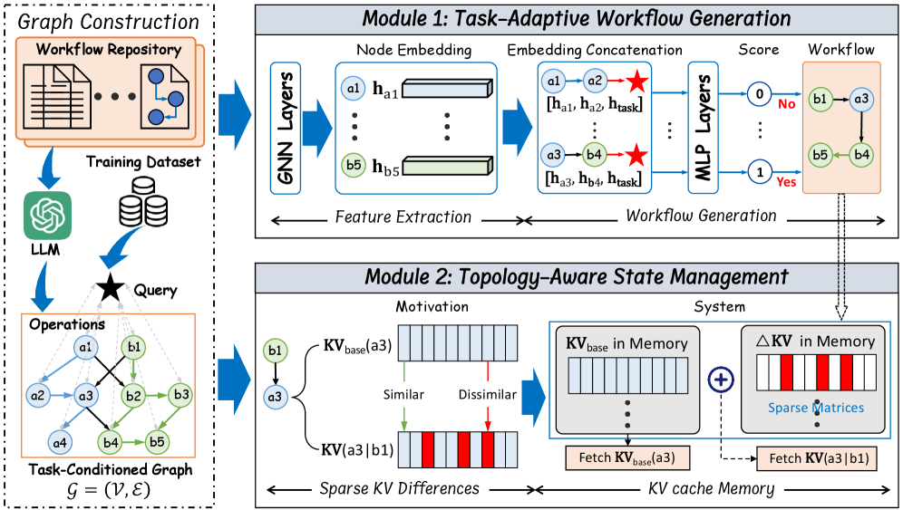
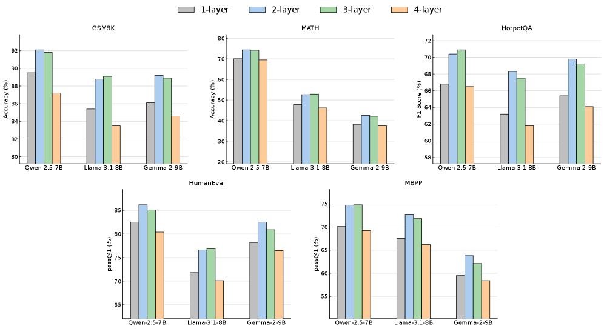
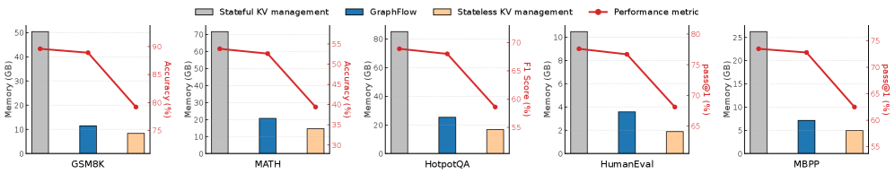
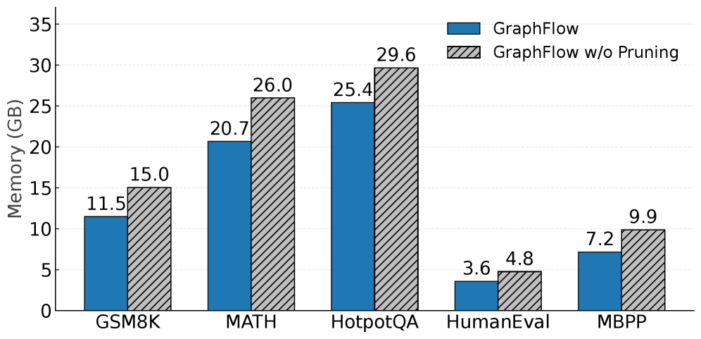
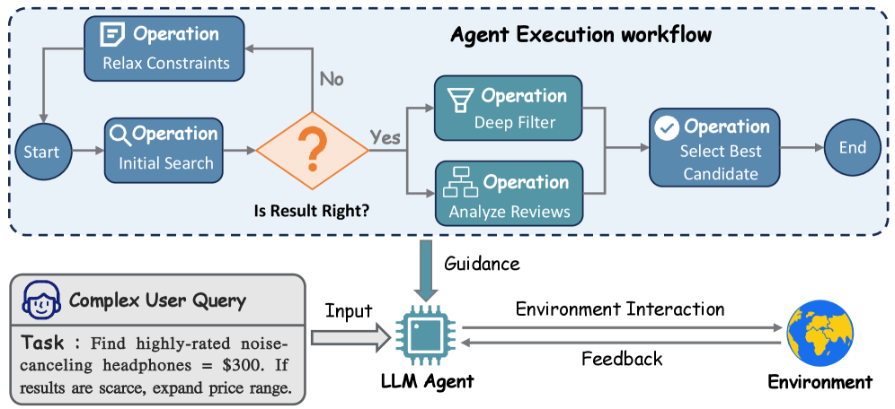

GraphFlow proposes a graph-based workflow management paradigm that dynamically generates task-specific workflows from a unified operation graph and reduces KV cache memory by ~4x, achieving consistent performance gains of ~4.95% over existing methods.
本文提出GraphFlow，一种基于图的工作流管理范式，通过统一有向无环图（wGraph）表示原子操作及其依赖关系，并利用图神经网络（GNN）动态生成任务特定子图，显著提升了对未见任务的泛化能力。同时，拓扑感知的KV缓存管理将每个操作的状态分解为上下文无关基向量和稀疏残差，将内存占用降低约4倍。在五个基准测试中，GraphFlow平均性能提升约4.95个百分点，为LLM智能体服务中的内存可扩展性问题提供了有效解决方案。
Deep Note — graphflow
Key Takeaways - GraphFlow uses a unified directed acyclic graph (wGraph) to represent atomic operations and their dependencies, enabling dynamic workflow generation instead of static template retrieval. - Task-adaptive workflow generation via a GNN synthesizes task-specific subgraphs from wGraph, improving generalization to unseen tasks. - Topology-aware KV cache management decomposes per-operation states into context-independent bases and sparse residuals, reducing memory footprint by ~4x. - GraphFlow achieves an average performance improvement of ~4.95 percentage points over SOTA baselines across five benchmarks. - The system explicitly models operation-level sharing across workflows, eliminating redundant KV cache storage and enabling scalable agent serving.
0) Metadata
- Title: GraphFlow: A Graph-Based Workflow Management for Efficient LLM-Agent Serving
- Alias: graphflow
- Authors: Ao Li, Shangpeng Yang, Fahao Chen, Tianheng Xu, Peng Li, Zhou Su
- arXiv ID: 2605.22566
- Published:
- Links:
- Abs: https://arxiv.org/abs/2605.22566
- HTML: https://arxiv.org/html/2605.22566v1
- PDF: https://arxiv.org/pdf/2605.22566
- Tags: llm-agent, workflow-management, kv-cache, graph-neural-network, memory-optimization
- Domains: system_safety
- Rating: 4/5 (base 1 + quality 2 + observation 1)
1) Why-read
GraphFlow proposes a graph-based workflow management paradigm that dynamically generates task-specific workflows from a unified operation graph and reduces KV cache memory by ~4x, achieving consistent performance gains of ~4.95% over existing methods.
2) CRGP
C — Context
LLM-based agents rely on structured workflows to execute complex tasks, but current systems use static templates or retrieval-based matching, limiting flexibility and generalization. Workflow-assisted serving also suffers from memory redundancy due to per-workflow KV caching of shared operations.
R — Related work
- LLM agents: CoT, ToT, ReAct, Reflexion, MemGPT for reasoning and memory.
- Agentic workflows: MetaGPT, ChatDev, TaskWeaver, LLM-Compiler, AFlow for structured SOPs.
- Memory-efficient serving: PagedAttention, vLLM, prefix caching (Gim et al., Zheng et al., Yao et al.).
G — Gap
Existing workflow-assisted agent systems rely on predefined templates and shallow matching, failing to capture deep semantic relationships and generalize to unseen tasks. They also manage KV caches per workflow, causing memory duplication when operations are shared across workflows.
P — Proposal
GraphFlow introduces wGraph, a unified DAG of atomic operations, from which task-specific workflows are dynamically generated via a GNN-based adaptive mechanism. It also uses topology-aware KV cache management that decomposes per-operation states into shared bases and sparse residuals, with path-pruning to avoid state explosion.
---
4) Experiments
Main results
Across five benchmarks (math reasoning, complex QA, code generation) and multiple LLM backbones, GraphFlow outperforms SOTA by an average of 4.95 percentage points and reduces KV cache memory footprint by approximately 4x.
Ablation
Ablation studies confirm that both the GNN-based adaptive generation and the topology-aware KV cache management contribute significantly to performance and memory savings; the path-pruning strategy prevents state space explosion.
Limitations
['The wGraph construction assumes a predefined set of atomic operations, which may limit adaptability to entirely novel operation types.', 'The GNN-based generation may require retraining or fine-tuning when the operation graph changes significantly.', "The system's effectiveness depends on the quality and coverage of the initial workflow repository used to build wGraph."]
5) Why it matters
- Directly addresses memory scalability in LLM agent serving, a critical bottleneck for production deployments.
- Shows that explicit modeling of operation-level sharing can improve both performance and efficiency, relevant to your work on resource-constrained agent systems.
- The graph-based dynamic workflow generation offers a principled way to handle compositional and unseen tasks, aligning with your interest in adaptive agent architectures.
6) Next steps
- [ ] Evaluate GraphFlow on more diverse and larger-scale agent benchmarks (e.g., WebArena, SWE-bench).
- [ ] Explore automated construction of wGraph from unstructured workflow descriptions or logs.
- [ ] Investigate integration with other memory optimization techniques like prefix caching or speculative decoding.
- [ ] Analyze the trade-offs between GNN inference overhead and generation quality for real-time serving.
7) Scoring
4/5 = base 1 + quality 2 + observation 1
GraphFlow：基于图的高效LLM智能体服务工作流管理
主要结论 - GraphFlow使用统一有向无环图（wGraph）表示原子操作及其依赖关系，支持动态工作流生成，而非静态模板检索。 - 通过GNN的任务自适应工作流生成机制，从wGraph中合成任务特定子图，提升对未见任务的泛化能力。 - 拓扑感知的KV缓存管理将每个操作的状态分解为上下文无关基向量和稀疏残差，内存占用减少约4倍。 - 在五个基准测试中，GraphFlow平均性能比当前最优方法提升约4.95个百分点。 - 系统显式建模跨工作流的操作级共享，消除冗余KV缓存存储，实现可扩展的智能体服务。
1) 阅读理由
GraphFlow提出基于图的工作流管理范式，从统一操作图动态生成任务特定工作流，并将KV缓存内存降低约4倍，在现有方法上实现约4.95%的持续性能提升。
2) CRGP（背景 / 相关工作 / 差距 / 方案）
上下文：基于LLM的智能体依赖结构化工作流执行复杂任务，但当前系统使用静态模板或基于检索的匹配，限制了灵活性和泛化能力。工作流辅助服务还因共享操作的逐工作流KV缓存导致内存冗余。 相关工作：LLM智能体方面包括CoT、ToT、ReAct、Reflexion、MemGPT等推理与记忆方法；智能体工作流方面包括MetaGPT、ChatDev、TaskWeaver、LLM-Compiler、AFlow等结构化SOP；内存高效服务方面包括PagedAttention、vLLM、前缀缓存（Gim等、Zheng等、Yao等）。 差距：现有工作流辅助智能体系统依赖预定义模板和浅层匹配，无法捕捉深层语义关系并泛化到未见任务。它们还按工作流管理KV缓存，导致操作跨工作流共享时内存重复。 提议：GraphFlow引入wGraph，一个原子操作的统一DAG，通过基于GNN的自适应机制动态生成任务特定工作流。它还使用拓扑感知的KV缓存管理，将每个操作的状态分解为共享基向量和稀疏残差，并通过路径剪枝避免状态爆炸。
3) 实验
在五个基准测试（数学推理、复杂问答、代码生成）和多个LLM骨干网络上，GraphFlow平均性能比当前最优方法高出4.95个百分点，并将KV缓存内存占用降低约4倍。
消融实验
消融研究证实，基于GNN的自适应生成和拓扑感知的KV缓存管理都对性能和内存节省有显著贡献；路径剪枝策略有效防止了状态空间爆炸。
局限性
['wGraph的构建假设原子操作集是预定义的，这可能限制对全新操作类型的适应性。', '当操作图发生显著变化时，基于GNN的生成可能需要重新训练或微调。', '系统的有效性取决于用于构建wGraph的初始工作流存储库的质量和覆盖范围。']
4) 重要性
- 直接解决了LLM智能体服务中的内存可扩展性问题，这是生产部署的关键瓶颈。
- 表明显式建模操作级共享可以同时提升性能和效率，对资源受限的智能体系统研究具有参考价值。
- 基于图的动态工作流生成提供了一种处理组合性和未见任务的原则性方法，与自适应智能体架构的研究方向一致。
5) 下一步
- [ ] 在更多样化和更大规模的智能体基准测试（如WebArena、SWE-bench）上评估GraphFlow。
- [ ] 探索从非结构化工作流描述或日志中自动构建wGraph。
- [ ] 研究与其他内存优化技术（如前缀缓存或推测解码）的集成。
- [ ] 分析GNN推理开销与生成质量之间的权衡，以支持实时服务。




